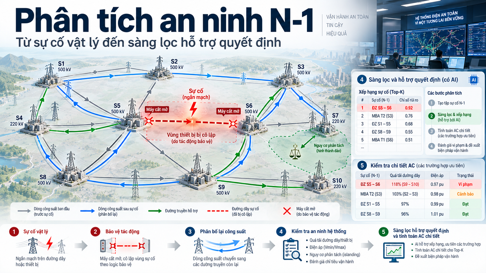

Vùng bảo vệ, phân bố công suất sau sự cố và vai trò của AI trong sàng lọc an ninh vận hành
Phân tích an ninh N-1 đánh giá khả năng vận hành của lưới sau các sự cố đơn lẻ trong danh sách xét. Kết quả phụ thuộc trước hết vào cách mô hình hoá sự cố: một phần tử bị sự cố có thể khiến nhiều thiết bị cùng bị cắt bởi bảo vệ. Bài viết phân tích mối quan hệ giữa phạm vi cắt, cấu trúc lưới và các hệ số độ nhạy, từ đó xác định cách dùng AI để xếp hạng sự cố cần kiểm tra bằng tính toán AC.
Trong ví dụ minh hoạ về ngân sách tính toán, mô hình AI thực hiện chức năng xếp hạng như một phễu sàng lọc. Với ngân sách 500 phép tính AC chi tiết, mọi sự cố trong danh sách chính thức vẫn thuộc phạm vi quản lý; mô hình chỉ xác định trường hợp nào được ưu tiên kiểm chứng trong cửa sổ tính toán. Một vi phạm nằm ngoài top 500 được tính là bỏ sót khi đánh giá chất lượng sàng lọc, không phải một sự cố bị xoá khỏi danh sách.
Van Tuan Dang28 tháng 9, 2026An ninh hệ thống điện · AI hỗ trợ quyết định

Sơ đồ khái niệm. Hình đặt chuỗi tác động vật lý cạnh quy trình phân tích. Trong vận hành, sàng lọc N-1 và xếp hạng được thực hiện trên các sự cố giả định trước khi sự cố thực xảy ra; tính toán AC xác nhận các trường hợp được ưu tiên.Phần I · Từ sự cố đến trạng thái sau sự cố
1. Tiêu chí N-1 trong vận hành lưới truyền tải
Đường dây, máy biến áp và thiết bị đóng cắt đều có thể gặp sự cố trong vận hành. Khi một phần tử bị loại khỏi hệ thống, các phần tử còn lại phải tiếp nhận sự thay đổi về công suất và điện áp. Thiết kế lưới, dự trữ vận hành và các biện pháp khắc phục cần được phối hợp để hạn chế gián đoạn cung cấp điện và tránh sự cố tiếp diễn.
Theo tiêu chí N-1, hệ thống cần đáp ứng các giới hạn an ninh đã quy định sau một sự cố đơn lẻ thuộc danh sách xét, có tính đến các biện pháp khắc phục được phép. Vì vậy, đánh giá N-1 phải gắn với trạng thái lưới, phạm vi sự cố và thời gian thực hiện biện pháp cụ thể. Chỉ kiểm tra chế độ bình thường chưa đủ để kết luận hệ thống có thể chịu được sự cố tiếp theo.
Thời gian tác động của bảo vệ và thời gian xử lý vận hành
Quá trình quá độ điện và tác động của bảo vệ có thể diễn ra nhanh hơn khả năng nhận diện và xử lý của điều độ viên. Thời gian cho phép xử lý quá tải phụ thuộc vào loại thiết bị, mức quá tải và chỉnh định bảo vệ. Phân tích trước sự cố giúp xác định phương án xử lý trong khoảng thời gian thực tế cho phép.
So sánh các thang thời gian. Hình minh hoạ sự chênh lệch giữa quá trình điện, tác động bảo vệ và xử lý của con người. Các mốc thời gian mang tính minh hoạ; khi áp dụng cần dùng thông số thiết bị và chỉnh định của hệ thống cụ thể.
Phân tích trước sự cố cần được cập nhật theo trạng thái lưới và danh sách sự cố đang xét. Kết quả phải đủ sớm để điều độ viên chuẩn bị biện pháp xử lý.
Phân tích N-1 sử dụng một trạng thái lưới tham chiếu, lần lượt áp dụng các sự cố giả định, tính trạng thái sau sự cố và kiểm tra giới hạn. Với ví dụ quy mô 7 000 nút và 10 000 nhánh trong bài, danh sách có thể gồm hàng nghìn trường hợp. Danh sách và kết quả cần được cập nhật theo cấu trúc lưới và trạng thái vận hành.
Trước khi lựa chọn bộ giải, cần mô tả đúng sự kiện vật lý. Việc đánh giá khả năng chịu sự cố của hệ thống phụ thuộc trước hết vào tập thiết bị mà bảo vệ sẽ loại khỏi vận hành.
Phần I · Từ sự cố đến trạng thái sau sự cố
2. Cấu trúc lưới và phạm vi tác động của bảo vệ
Khả năng chịu sự cố phụ thuộc vào cả cấu trúc truyền tải và cách hệ thống bảo vệ cô lập phần tử bị sự cố.
Dự phòng từ cấu trúc mạch vòng
Trong lưới mạch vòng, khi một đường dây bị cắt, công suất phân bố lại qua các đường còn lại theo trở kháng mạng. Khả năng duy trì vận hành phụ thuộc vào dung lượng và giới hạn của các đường này. Các nhánh hình tia có ít phương án cấp điện thay thế hơn, nên cần được phân biệt khi đánh giá sự cố.
Mạch vòng và nhánh hình tia. Trong sơ đồ này, lưới chính có đường truyền thay thế; nhánh cấp điện ở rìa chỉ có một kết nối. Cắt kết nối đó sẽ tách phần lưới phía sau.
Bảo vệ và phạm vi cắt sự cố
Rơ-le sử dụng tín hiệu đo và logic bảo vệ để phát hiện sự cố, sau đó gửi lệnh mở các máy cắt liên quan. Trong mô hình xét ở đây, máy cắt thực có khả năng cắt dòng sự cố; dao cách ly và liên kết thanh cái không thực hiện chức năng này.
Trong bài, đối tượng tính toán được gọi chính xác là tập phần tử bị cắt do bảo vệ (protection-induced outage set): tập thiết bị bị loại khỏi vận hành khi các máy cắt biên mở để cô lập sự cố. Tập này được suy ra từ kết nối node-breaker và logic cắt nêu ở mục 8. Thuật ngữ này không đồng nhất với “vùng bảo vệ” của rơ-le theo nghĩa chỉnh định, CT/VT hay bảo vệ so lệch; khi áp dụng phải đối chiếu với cấu hình bảo vệ chính, dự phòng và trạng thái thực của thiết bị.
Phạm vi cắt trong sơ đồ minh hoạ. Điểm rẽ không có máy cắt nên đường dây và thanh cái cùng nằm trong vùng được cô lập bởi A, B, C và D. Nếu bổ sung máy cắt tại điểm rẽ, phạm vi cắt có thể thay đổi theo cấu hình bảo vệ.
Khi một phần tử có các máy cắt riêng để cô lập nó, phạm vi cắt có thể trùng với chính phần tử đó. Giả định sự cố đơn phần tử phù hợp với trường hợp này. Với các cấu hình dùng chung máy cắt hoặc đấu rẽ, cần xác định lại tập thiết bị thực sự bị cắt.
Các cấu hình có phạm vi cắt nhiều phần tử
Đấu rẽ đường dây (tee-off, hay piquage) cho phép kết nối một trạm mà không bố trí đầy đủ máy cắt tại điểm rẽ. Cấu hình này giảm thiết bị và chi phí xây dựng, nhưng có thể làm tăng phạm vi mất điện khi xảy ra sự cố. Trong ví dụ ba nhánh không có máy cắt tại điểm rẽ, các máy cắt ở ba đầu xa phải mở để cô lập vùng.
Ảnh hưởng của máy cắt tại điểm rẽ. Cấu hình bên trái có máy cắt phân chia các nhánh. Cấu hình bên phải dùng các máy cắt ở đầu xa, nên sự cố trong vùng dẫn đến cắt cả ba nhánh theo giả thiết bảo vệ của ví dụ.
Các cấu hình máy biến áp ba cuộn dây và ngăn lộ liên kết qua dao cách ly cũng cần được xem xét ở mức node-breaker. Số lượng và kích thước các vùng phụ thuộc vào thiết kế trạm và trạng thái đóng cắt. Không nên suy ra các thông tin này chỉ từ số đường dây hay số nút của mô hình nút–nhánh.
Khi phạm vi cắt đã được xác định ở mức thiết bị, bài toán mới chuyển sang miền điện. Phần công suất từng đi qua các thiết bị bị loại sẽ phân bố lại theo những đường nào, và giới hạn nào của phần lưới còn lại có thể bị vi phạm?
Phần I · Từ sự cố đến trạng thái sau sự cố
3. Phân bố công suất sau sự cố
Sau khi cắt đường dây, công suất trên các nhánh còn lại thay đổi theo cấu trúc mạng, trở kháng và trạng thái nguồn–tải. Phân tích an ninh tính trước trạng thái này để xác định vi phạm và nhu cầu khắc phục.
Ba trường hợp dưới đây minh hoạ các tình huống cần phân biệt trong bài.
Ba trường hợp trên cùng sơ đồ lưới. Vị trí sự cố và phạm vi cắt quyết định kết nối còn lại. Mức tải và vi phạm sau sự cố vẫn cần được tính toán.
Trường hợp 1 · LODF
Mất một phần tử, lưới còn liên thông
Khi mạng còn liên thông, công suất phân bố lại qua các nhánh còn lại và có thể gây quá tải. LODF ước lượng thay đổi công suất tác dụng trên các nhánh trong xấp xỉ DC, với điều kiện sự cố không làm tách lưới và giả thiết công suất nút phù hợp.
Trường hợp 2 · GLODF
Một sự cố làm cắt nhiều phần tử
Nếu nhiều phần tử cùng bị cắt nhưng mạng còn liên thông, phải tính ảnh hưởng của cả nhóm đồng thời. Tổng các LODF đơn lẻ trên lưới ban đầu không phản ánh đầy đủ tương tác giữa các phần tử bị cắt. GLODF xử lý trường hợp này trong cùng xấp xỉ tuyến tính.
Trường hợp 3 · Tách đảo
Sự cố gây tách đảo
Cắt một nhánh cầu hoặc một tập nhánh liên kết có thể chia lưới thành các thành phần riêng. Mỗi thành phần cần được kiểm tra nguồn, tải và khả năng cân bằng. Với phần lưới được giữ lại trong mô hình, thay đổi công suất trao đổi với phần bị tách phải được bù theo giả thiết cân bằng đã chọn. Công thức LODF thông thường không áp dụng trực tiếp cho trường hợp tách đảo.
Phân loại cấu trúc cần xét đồng thời phạm vi cắt, các thành phần liên thông và nguồn–tải trong từng thành phần. Phân bố công suất và giới hạn vận hành được kiểm tra ở bước tính toán tiếp theo.
Trên lưới nhỏ, ba cơ chế này có thể được nhận diện trực tiếp. Trong vận hành thực tế, cùng một phép phân loại và tính toán phải được lặp lại cho hàng nghìn sự cố, khi cấu trúc lưới thay đổi và thời gian xử lý bị giới hạn.
Phần II · Bài toán quy mô
4. Quy mô tính toán và sàng lọc sự cố
Chi phí thực hiện phép tính AC chi tiết cho toàn bộ danh sách phụ thuộc vào quy mô lưới, số sự cố, khả năng hội tụ và hạ tầng tính toán. Danh sách sự cố chính thức vẫn là phạm vi phải được quản lý theo quy trình vận hành; sàng lọc không định nghĩa lại hay loại bớt danh sách đó. Khi thời gian xử lý bị giới hạn, sàng lọc chỉ giảm hoặc ưu tiên số phép tính AC chi tiết cần thực hiện trong cửa sổ quyết định, theo một chính sách an toàn đã được phê duyệt. Chất lượng của bước ưu tiên phải được đánh giá bằng tỷ lệ phát hiện và mức nghiêm trọng của các trường hợp bị bỏ sót.
Học máy có thể học từ các kết quả mô phỏng để xếp hạng sự cố trên trạng thái lưới mới. Chỉ tiêu trực tiếp là tỷ lệ sự cố gây vi phạm được giữ trong top-K, cùng với thời gian tính toán và mức nghiêm trọng của các trường hợp bị bỏ sót.
Chọn các quan hệ sự cố–phần tử cần xét
Với 10 000 sự cố và 10 000 phần tử giám sát, có 100 triệu cặp cần xét nếu kết nối đầy đủ. Hệ số độ nhạy cho phép chọn các cặp có tương tác điện đáng kể trong mô hình tuyến tính. Số cặp được giữ phụ thuộc vào cấu trúc lưới và ngưỡng chọn; ngưỡng này cần được kiểm chứng theo chất lượng xếp hạng.
Chọn cặp theo độ nhạy. Các quan hệ được giữ tạo đầu vào thưa cho mô hình, giảm khối lượng xử lý so với xét đầy đủ mọi cặp.
Trong kiến trúc này, hệ số độ nhạy xác định các quan hệ đầu vào cho mô hình xếp hạng. Chúng cũng cho một ước lượng tuyến tính về thay đổi công suất, nhưng chưa thay thế kết quả AC. Mô hình học có thể bổ sung thông tin mà xấp xỉ DC chưa mô tả; khả năng này phải được đánh giá trên dữ liệu kiểm tra.
Thống nhất phạm vi sự cố giữa đầu vào và nhãn
Nếu nhãn được tạo bằng mô phỏng cắt cả vùng bảo vệ, còn bản đồ độ nhạy chỉ xét một phần tử, đầu vào và nhãn mô tả hai phạm vi sự cố khác nhau. Cần thống nhất tập phần tử bị cắt trước khi huấn luyện và đánh giá mô hình.
Sai khác phạm vi mô hình hoá. Độ nhạy đơn phần tử và kết quả cắt cả vùng chỉ so sánh trực tiếp được khi chúng cùng mô tả một tập thiết bị bị cắt.
Một vùng nhiều phần tử có thể tạo ra nhiều bản ghi cho cùng một sự kiện, nhưng mỗi bản ghi dùng một bản đồ độ nhạy khác nhau. Các bản ghi trùng này ảnh hưởng đến huấn luyện và chiếm nhiều vị trí trong danh sách top-K. Gộp theo phạm vi cắt giúp xử lý cả hai vấn đề.
Giảm khối lượng tính toán chỉ có giá trị khi câu hỏi vật lý vẫn được giữ nguyên. Muốn tạo đầu vào thưa mà không đánh đồng các loại sự cố, cần hiểu rõ mỗi hệ số độ nhạy mô tả đại lượng nào và mất hiệu lực trong điều kiện nào.
Phần III · Chọn đúng mô hình vật lý
5. GLODF và ISDF trong một khung độ nhạy thống nhất
PTDF mô tả đáp ứng tuyến tính với thay đổi công suất nút. LODF và GLODF sử dụng quan hệ đó để xét cắt một nhánh hoặc một nhóm nhánh. Khi sự cố gây tách đảo, cần xét riêng mất trao đổi công suất và cơ chế cân bằng; bài viết dùng ký hiệu riêng ISDF (Islanding Sensitivity Distribution Factor) cho hệ số đáp ứng này. Ký hiệu đó không mang nghĩa Injection Shift Distribution Factor thường gặp trong tài liệu hệ thống điện.
Hệ số phải được chọn theo tập thiết bị thực sự bị cắt và cấu trúc lưới sau sự cố. Số phần tử trong vùng chưa đủ để quyết định công thức.
Đóng góp phương pháp của bài viết
Bài viết đặt GLODF và ISDF trong cùng một logic lựa chọn dựa trên phạm vi cắt do bảo vệ xác định. Khi một nhóm phần tử bị loại nhưng phần lưới còn lại vẫn liên thông, GLODF biểu diễn ảnh hưởng đồng thời của nhóm và tương tác giữa các phần tử bị cắt. Khi phạm vi đó làm tách một thành phần có trao đổi công suất, ISDF biểu diễn đáp ứng của phần lưới được giữ lại dưới một chính sách cân bằng được chỉ rõ. Đây là hai nhánh của cùng một phép phân loại cấu trúc, không phải hai công thức có thể thay thế tùy ý.
5.1 PTDF: độ nhạy với giao dịch công suất
Xét giao dịch tăng 1 MW tại nút i và giảm 1 MW tại nút j. PTDF của một nhánh là tỷ lệ thay đổi công suất trên nhánh đó so với công suất giao dịch, trong mô hình tuyến tính và cấu trúc lưới đang xét.
PTDF cho giao dịch i → j. Các giá trị trên hình biểu diễn phần công suất giao dịch đi qua từng nhánh trong ví dụ.
ΔFl = PTDFl,(i→j) · ΔP
Ý nghĩa: trong mô hình DC tuyến tính, thay đổi công suất trên nhánh l bằng PTDF của nhánh đối với giao dịch i → j nhân với mức thay đổi công suất. Hệ số phụ thuộc cấu trúc lưới và tham số nhánh. Vì giao dịch đã cân bằng (+ΔP tại i, −ΔP tại j), PTDF này độc lập với lựa chọn nút tham chiếu; chính sách slack chỉ xuất hiện khi xét một thay đổi công suất nút chưa được cân bằng sẵn.
5.2 LODF: độ nhạy khi cắt một nhánh
LODF liên hệ thay đổi công suất trên nhánh còn lại với công suất trước sự cố Fk của nhánh bị cắt. Công thức dùng PTDF trên mạng ban đầu và hệ số hiệu chỉnh 1 − PTDFk,k để tính đến việc loại nhánh k.
Điều kiện áp dụng LODF. Khi nhánh k là cầu, PTDFk,k bằng 1 trong mô hình DC lý tưởng và mẫu số bằng 0. Trường hợp này cần được xử lý như tách đảo.
LODFl,k = PTDFl,k ⁄ (1 − PTDFk,k) ΔFl = LODFl,k · FkÝ nghĩa: PTDFl,k là độ nhạy của nhánh l đối với giao dịch giữa hai đầu của k. Khi k là nhánh cầu trong mô hình DC lý tưởng, mẫu số bằng 0; trường hợp này phải được chuyển sang phân tích tách đảo.
5.3 GLODF: độ nhạy khi cắt đồng thời một nhóm nhánh
GLODF trả lời câu hỏi: khi toàn bộ tập nhánh G của một vùng bảo vệ cùng bị loại, công suất trên mỗi nhánh còn lại thay đổi bao nhiêu? Các nhánh trong G không còn tồn tại để tiếp nhận phần công suất phân bố lại của nhau, nên ảnh hưởng của chúng phải được giải đồng thời qua ma trận tương tác. Vì vậy, tổng các LODF đơn lẻ tính trên lưới ban đầu không tương đương với kết quả cắt cả nhóm. Trong khung của bài viết, tập G được lấy từ sự kiện vật lý do bảo vệ tạo ra, thay vì được ghép tùy ý từ các phần tử độc lập.
Ma trận tương tác M. Với nhóm một nhánh, M = 1 − Ξkk và công thức trở về LODF. Khi tập nhánh bị cắt làm mất liên thông, M suy biến và cần xử lý cấu trúc tách đảo.
Ví dụ số: hai phần tử k₁, k₂ cùng nhảy, giám sát nhánh l
Độ nhạy tự thân
Ξ₁₁ = 0,30
Ξ₂₂ = 0,25
Phần giao dịch đi qua chính nó
Độ nhạy tương hỗ
Ξ₁₂ = 0,20
Ξ₂₁ = 0,20
Tương tác giữa k₁ và k₂
Độ nhạy của l
Ξl1 = 0,40
Ξl2 = 0,10
Dòng trước sự cố F₁ = 100 MW, F₂ = 80 MW
Cộng riêng lẻ hai LODF
0,571 × 100
+ 0,133 × 80
= 67,8 MW
GLODF, giải đồng thời
0,660 × 100
+ 0,309 × 80
= 90,7 MW
Trong ví dụ, cộng các ảnh hưởng đơn lẻ cho kết quả thấp hơn 23 MW so với tính đồng thời. Sai lệch này có thể thay đổi quyết định giữ hay loại một cặp khi xây dựng bản đồ độ nhạy.
M = I − ΞGG GLODFl,G = Ξl,G · M−1 ΔFl = GLODFl,G · FGÝ nghĩa: ΞGG là ma trận k×k mô tả tương tác trong nhóm; Ξl,G là hàng độ nhạy của nhánh giám sát l; FG là véc-tơ công suất trước sự cố. Nếu M suy biến hoặc kém điều kiện, cần kiểm tra liên thông và giả thiết cân bằng trước khi chọn phương pháp giải phù hợp.
5.4 ISDF trong bài: đáp ứng của phần lưới còn lại khi tách đảo
ISDF theo định nghĩa của bài trả lời một câu hỏi khác: khi một nhánh cầu hoặc tập cắt làm tách đảo, phần lưới được giữ lại phản ứng thế nào trước lượng công suất trao đổi vừa mất qua biên? Sự thay đổi được biểu diễn tại nút biên và được bù bởi các nguồn tham gia theo trọng số α. Hệ số ánh xạ biến động ròng đó thành thay đổi công suất trên các nhánh còn lại, theo công suất trước sự cố và chính sách cân bằng đã chọn. Vì α là một quyết định vận hành chứ không phải thuộc tính cố định của lưới, chiều công suất và giả thiết cân bằng phải được ghi rõ khi tính và kiểm chứng hệ số.
Hai thành phần của đáp ứng. Mỗi giao dịch cân bằng từ nút biên bk tới một nút tham gia g được quy đổi thành thay đổi công suất nhánh qua PTDF; trọng số α ghép các giao dịch đó thành chính sách cân bằng đã chọn. Khả năng vận hành của đảo bị tách cần được đánh giá riêng.
ISDFl,k(α) = Σg αg · PTDFl,(bk→g) ΔFl = ISDFl,k(α) · FkÝ nghĩa: PTDFl,(bk→g) mô tả thay đổi công suất trên nhánh l do một giao dịch cân bằng: bơm tại nút biên bk và rút tại nút tham gia g. Tổng có trọng số α, với Σαg = 1, biểu diễn chính sách cân bằng đã chọn. Cách viết theo giao dịch này nhất quán với định nghĩa PTDF ở mục 5.1; α là giả thiết vận hành, không phải tham số cố định của lưới, và phải thống nhất giữa mô hình sàng lọc với bộ giải dùng để đối chiếu.
Phạm vi sử dụng các hệ số
Hệ số
Đại lượng mô tả
Điều kiện áp dụng
Giả thiết bổ sung
PTDF
Thay đổi công suất nhánh do một giao dịch
Cấu trúc tham chiếu và giao dịch cân bằng đã xác định
Cặp nguồn–đích; giao dịch cân bằng độc lập với slack
LODF
Phân bố lại công suất khi cắt một nhánh
Nhánh bị cắt không làm tách lưới
Trạng thái trước sự cố
GLODF
Phân bố lại công suất khi cắt một nhóm nhánh
Nhóm bị cắt không làm tách lưới
Ma trận tương tác; k = 1 trở về LODF
ISDF(α)
Đáp ứng của phần lưới được giữ lại sau khi tách đảo
Thành phần liên thông và chênh lệch công suất đã xác định
Chính sách cân bằng α
Các hệ số sử dụng cùng nền tảng tuyến tính nhưng có điều kiện áp dụng khác nhau. Mẫu số bằng không hoặc ma trận suy biến cần được xử lý bằng phân tích cấu trúc, thay vì tiếp tục áp dụng công thức cho lưới liên thông.
Việc lựa chọn công thức phải dựa trên phân loại cấu trúc sau sự cố. Trước mỗi phép tính cần xác định tập thiết bị bị cắt, các thành phần liên thông còn lại và giả thiết xử lý mất cân bằng công suất.
Phần III · Chọn đúng mô hình vật lý
6. Chọn mô hình theo cấu trúc sau sự cố
Sau khi xác định tập thiết bị bị cắt, bước đầu tiên là kiểm tra lưới còn liên thông hay đã tách thành nhiều thành phần. Mất nguồn hoặc tải không đồng nghĩa với tách đảo: một vùng cắt có thể làm mất một điểm bơm hoặc rút công suất trong khi phần lưới truyền tải còn lại vẫn liên thông. Vì vậy, cần phân loại theo liên thông trước, rồi xác định phần công suất phải cân bằng trong từng thành phần.
Liên thông được kiểm tra trước, cân bằng công suất được xét sau. Khi mất một điểm bơm hoặc rút công suất nhưng lưới vẫn liên thông, cần kết hợp giả thiết cân bằng với LODF/GLODF. Xử lý tách đảo chỉ áp dụng khi cấu trúc lưới bị chia thành nhiều thành phần.
Trong mô hình DC, mất liên thông làm ma trận tương tác suy biến. Cần phân biệt việc cô lập một nút nối không có nguồn–tải với việc tách một vùng có công suất. Ngưỡng coi công suất bằng không và quy ước cân bằng phải được ghi rõ, nhất quán giữa mô hình độ nhạy và bộ giải tạo nhãn.
Tỷ lệ các trường hợp phụ thuộc vào cấu trúc trạm, nhánh hình tia và trạng thái đóng cắt. Cần thống kê trên dữ liệu của từng lưới để lựa chọn cách tổ chức tính toán.
Ví dụ lưới nhỏ dưới đây minh hoạ trực tiếp quy tắc lựa chọn mô hình. Ví dụ tách riêng ảnh hưởng của liên thông, nguồn–tải và phạm vi cắt trước khi mở rộng sang hệ thống có quy mô lớn hơn.
Phần III · Chọn đúng mô hình vật lý
7. Minh hoạ phân loại sự cố trên lưới nhỏ
Chọn một phần tử trên sơ đồ để xem vùng bị cắt, phần lưới bị tách và cơ chế tính toán tương ứng. Minh hoạ tương tác này sử dụng các giả thiết cấu trúc và nguồn–tải của lưới mô phỏng.
Cơ chế
—
Kiểm tra cấu trúc
Chọn một phần tử bất kỳ. Các phần tử cùng vùng bảo vệ sáng lên cùng lúc: đó là những gì thực sự ra
khỏi vận hành.
Phần tửVùng bị cắtPhần bị tách● nút · ◎ nút có tải · ○ T: điểm rẽ, không máy cắt
L8 và L9 đều là nhánh cụt và đều cô lập một nút khi bị cắt. Nút sau L8 có tải, còn nút sau L9 không có nguồn–tải. Vì vậy, hai trường hợp có cùng dạng mất liên thông nhưng yêu cầu xử lý cân bằng khác nhau.
Ví dụ này giả định vùng bị cắt đã được biết. Trong mô hình vận hành thật, thông tin đó không nên suy đoán từ sơ đồ nút–nhánh; nó phải được truy vết từ kết nối node-breaker và trạng thái thực của thiết bị đóng cắt.
Phần III · Chọn đúng mô hình vật lý
8. Lan truyền sự cố và tập phần tử bị loại trên mô hình node-breaker
Mô hình node-breaker biểu diễn chi tiết máy cắt, dao cách ly và phân đoạn thanh cái. Minh hoạ tương tác dưới đây không chỉ xác định phạm vi cắt mà còn mô tả quá trình lan truyền sự cố ở lớp topology và bảo vệ: bắt đầu từ phần tử sự cố, thuật toán đi qua các phần tử không có khả năng cô lập, dừng tại các máy cắt biên và kéo theo những phần tử nằm trong cùng vùng. Kết quả của quá trình này là tập phần tử bị loại cuối cùng, không nhất thiết chỉ gồm phần tử khởi phát.
Chuỗi xử lý: Sự cố khởi phát → Lan truyền theo topology và bảo vệ → Tập phần tử bị loại cuối cùng → Phân loại liên thông → LODF / GLODF / tách đảo → Kiểm chứng bằng phân bố công suất AC.
Cần phân biệt ba tầng. Lan truyền sự cố xác định phần tử nào thực sự rời vận hành. LODF, GLODF hoặc mô hình tách đảo cung cấp đánh giá nhanh về hậu quả điện của tập phần tử đó. Phân bố công suất AC xác nhận trạng thái xác lập cuối cùng theo mô hình và giới hạn vận hành được sử dụng. Minh hoạ cho phép chạy từng bước hoặc tự động; phần tính toán DC dùng Sbase = 100 MVA để làm rõ cơ chế.
Máy cắtMáy cắt fictitiousDao cách lyMáy cắt biên: mởĐi quaNút đã quétRa khỏi lướiPhần bị tách đảoTổ máyTải
Quy tắc duyệt theo loại thiết bị
Gặp
Trạng thái
Quyết định
Hệ quả
Vì sao (vật lý)
Thanh cái / liên kết nội bộ
Luôn nối
ĐI QUA
Quét tiếp mọi thứ nối vào
Thanh cái chỉ là một nút điện, không cắt được gì
Dao cách ly
Đóng
ĐI QUA
Lan sang phía bên kia
Trong mô hình này, không được dùng làm biên cắt dòng sự cố
Máy cắt fictitious
Đóng
ĐI QUA
Coi như dao cách ly
Sinh ra khi chuyển đổi mô hình, không phải thiết bị mở được
Máy cắt thật
Đóng
DỪNG · MỞ
Thành biên của vùng, mở để cắt sự cố
Cắt được dòng sự cố
Thiết bị đóng cắt bất kỳ
Đang mở
DỪNG
Không cần mở thêm
Nhánh đó vốn đã hở
Đầu một đường dây / máy biến áp khác
Nối không qua máy cắt
RA THEOĐI TIẾP
Phần tử đó ra khỏi lưới; quét tiếp từ đầu kia
Nằm trong vùng, không có máy cắt ngăn
Tổ máy / tải
Nối vào vùng
RA THEO
Mất công suất đó, phải bù
Mất điện áp cùng vùng
Trong mô hình minh hoạ, các nút nối qua thiết bị đóng được gộp thành bus. Phần không nối với nút cân bằng được loại khỏi bài toán DC; vì vậy, phép tính không đánh giá vi phạm hay khả năng vận hành độc lập của phần đó. Công suất chênh lệch được phân bổ cho các tổ máy còn lại theo công suất cực đại. Đây là giả thiết tính toán của lưới minh hoạ.
Phân bố công suất không mô tả quá trình lan truyền sự cố; nó chỉ giải trạng thái xác lập của lưới sau khi tập phần tử bị loại đã được xác định.
Giới hạn của minh hoạ. Quá trình lan truyền ở đây dựa trên mô hình node-breaker và logic cô lập điện. Trong vận hành thực tế, sự cố có thể tiếp tục lan qua các phụ thuộc chức năng không thể suy ra chỉ từ topology điện, như nguồn tự dùng, hệ thống làm mát, nguồn điều khiển, tự động hoá hoặc liên động. Những quan hệ này cần được biểu diễn trong một lớp mô hình phụ thuộc riêng.
Khi phạm vi cắt có thể truy vết và được dùng nhất quán trong mô phỏng, đầu vào và nhãn mới cùng mô tả một sự kiện. Từ thời điểm đó, câu hỏi không còn là bản đồ độ nhạy có chạy được hay không, mà là nó sàng lọc tốt đến mức nào và bỏ sót rủi ro gì.
Phần IV · Kiểm chứng và khả năng áp dụng
9. Thiết kế và đánh giá bản đồ độ nhạy
Bản đồ độ nhạy cần được đánh giá qua chất lượng sàng lọc và chi phí xử lý. Các lựa chọn chính gồm ngưỡng giữ cặp, cách sử dụng quan hệ điện, đặc trưng của từng sự cố và đơn vị xếp hạng.
Độ thưa
Ngưỡng chọn cặp và rủi ro bỏ sót
Ngưỡng chọn cặp giảm số quan hệ cần xử lý nhưng có thể loại thông tin hữu ích. Cần đo ảnh hưởng của ngưỡng đến độ bao phủ sự cố vi phạm (recall) và mức nghiêm trọng của các trường hợp bị bỏ sót, cùng với bộ nhớ và thời gian tính toán.
Vật lý hay cấu trúc
Quan hệ điện và khoảng cách đồ thị
Khoảng cách đồ thị không phản ánh đầy đủ tương tác điện. Các phần tử xa nhau có thể cùng chịu ảnh hưởng của một hành lang truyền tải, trong khi các nhánh gần nhau có độ nhạy thấp. Lựa chọn cặp cần xét trở kháng và cấu trúc đường truyền.
Độ phủ
Đánh giá lợi ích của việc mở rộng bản đồ
Bổ sung láng giềng cấu trúc làm tăng số cặp và bộ nhớ. Mô hình còn sử dụng đặc trưng riêng của sự cố như mức tải và biên giới hạn, nên lợi ích của các cặp bổ sung cần được đo bằng thực nghiệm trên cùng bộ dữ liệu.
Đơn vị
Xếp hạng theo sự kiện vật lý
Một vùng gồm ba phần tử có thể chiếm ba vị trí top-K nếu xếp hạng riêng từng phần tử. Gộp theo vùng giúp tránh trùng lặp và thống nhất phạm vi giữa bản đồ độ nhạy, nhãn và trường hợp mô phỏng.
Ví dụ về khoảng cách và độ nhạy. Bên trái, hai phần tử thuộc các đường truyền song song nên có tương tác đáng kể. Bên phải, hai nhánh cấp tải riêng có tương tác thấp trong giả thiết cân bằng của ví dụ.
Giới hạn của xấp xỉ tuyến tính
Ba yếu tố cần được kiểm tra khi sử dụng bản đồ độ nhạy trong sàng lọc:
Xấp xỉ DC. Mô hình không mô tả đầy đủ tổn thất, công suất phản kháng và biên độ điện áp. Cần đối chiếu với kết quả AC; mô hình học chỉ có thể bù một phần sai lệch nếu dữ liệu và đánh giá chứng minh được điều đó.
Thay đổi cấu trúc lưới. Cắt điện bảo trì có thể làm giảm số đường truyền thay thế và thay đổi độ nhạy. Bản đồ cần được cập nhật hoặc kiểm tra lại khi cấu trúc vận hành thay đổi đáng kể.
Giới hạn điện áp và dòng điện. Độ nhạy công suất tác dụng chỉ phản ánh một phần bài toán. Khi điện áp hoặc công suất phản kháng là ràng buộc quan trọng, cần bổ sung mô hình và chỉ tiêu phù hợp.
Các loại sự cố cần mô hình riêng
Phạm vi cắt theo các quy tắc trên chưa bao quát mọi cơ chế bảo vệ. Sự cố thanh cái, máy cắt từ chối tác động và sự cố chung nguồn gốc cần các điểm khởi phát và quy tắc riêng. Chẳng hạn, máy cắt không mở có thể buộc bảo vệ dự phòng cắt rộng hơn; hai mạch cùng cột có thể bị sự cố đồng thời.
Mở rộng danh sách sự cố cần đi kèm quy tắc bảo vệ, phạm vi cắt và giả thiết cân bằng tương ứng cho từng loại sự kiện.
Ngưỡng được hiệu chỉnh trên một cấu trúc lưới không mặc nhiên áp dụng cho cấu trúc khác. Mật độ mạch vòng, cách bố trí máy cắt và tỷ lệ nhánh hình tia làm thay đổi cả phân bố cơ chế sự cố lẫn độ thưa có thể chấp nhận của bản đồ.
Phần IV · Kiểm chứng và khả năng áp dụng
10. Áp dụng cho các lưới truyền tải khác nhau
Có thể áp dụng cùng quy trình phân loại cho các lưới khác nhau nếu dữ liệu thể hiện đủ kết nối, loại và trạng thái thiết bị đóng cắt, cùng công suất nguồn–tải. Tách đảo cần được kiểm tra kể cả khi công suất trao đổi trước sự cố bằng không.
Phân bố các loại sự cố theo cấu trúc lưới. Các thanh trong hình chỉ mang tính minh hoạ. Khi áp dụng, cần thống kê trên cấu trúc và trạng thái đóng cắt của lưới đang xét.
Mô hình nút–nhánh vẫn hỗ trợ tính độ nhạy nhưng thường không giữ đủ thông tin để xác định phạm vi tác động bảo vệ. Nếu dữ liệu trao đổi ở dạng này, cần kèm ánh xạ vùng hoặc danh sách sự cố đã xác định từ mô hình node-breaker. Đồng thời phải kiểm tra tính nhất quán của công suất nút và giả thiết cân bằng.
Khác biệt giữa các lưới không làm thay đổi yêu cầu về tính nhất quán của phép phân tích. Sự kiện, mô hình và phương pháp kiểm chứng phải mô tả cùng một trạng thái vật lý. Khi đưa AI vào quy trình, tốc độ tính toán không thể thay thế bằng chứng về độ tin cậy.
Phần V · AI trong quy trình vận hành
11. AI trong xếp hạng và sàng lọc sự cố
AI có thể xếp hạng danh sách sự cố để ưu tiên tính AC trong thời gian cho phép. Kết quả xếp hạng là đầu vào cho bước kiểm chứng, chưa phải kết luận về an ninh lưới. Phải xác định rõ cách xử lý các trường hợp chưa được mô phỏng và cơ chế chuyển sang đánh giá đầy đủ khi cần.
Kết hợp xếp hạng vật lý và học máy. Các trường hợp được chọn từ hai danh sách được gộp, loại trùng và ưu tiên kiểm chứng AC. Top-K là thứ tự ưu tiên tính toán, không mặc nhiên là ranh giới để loại các sự cố còn lại.
Trong triển khai TSO, sàng lọc phải đi kèm một chính sách an toàn được phê duyệt: tiêu chí sàng lọc đã kiểm chứng, giám sát thay đổi cấu trúc lưới và phân bố dữ liệu, cơ chế chuyển sang đánh giá toàn bộ danh sách hoặc một phép đánh giá tương đương, cùng quy tắc xử lý mọi trường hợp chưa được tính AC trong cửa sổ thời gian hiện tại. Trạng thái “ngoài top-K” không đồng nghĩa với “an toàn”.
Kết hợp với phương pháp dựa trên vật lý
Mô hình học có thể giảm chất lượng khi gặp cấu trúc lưới hoặc chế độ vận hành khác với dữ liệu huấn luyện. Phương pháp độ nhạy được tính lại trên cấu trúc hiện tại cung cấp một căn cứ độc lập, nhưng vẫn chịu giới hạn của mô hình tuyến tính và chất lượng dữ liệu. Có thể dành một phần số lượt tính AC cho các sự cố được phương pháp vật lý xếp hạng cao, rồi bổ sung theo kết quả học máy. Cách kết hợp này cần được đánh giá bằng độ bao phủ, mức nghiêm trọng của các trường hợp bị bỏ sót và tổng thời gian xử lý.
Chỉ tiêu đánh giá sàng lọc
Độ bao phủ tại K cố định (recall@K). Đo tỷ lệ sự cố gây vi phạm AC nằm trong top-K được chọn. Đồng thời theo dõi số báo động nhầm vì chúng chiếm thời gian tính toán có thể dành cho các trường hợp khác.
Đánh giá theo trạng thái vận hành. Báo cáo kết quả riêng cho từng trạng thái, bao gồm các trường hợp xấu nhất. Giá trị trung bình không đủ để mô tả rủi ro vận hành.
Mức nghiêm trọng. Phân biệt các mức vi phạm, chẳng hạn tải 101 % và 140 %. Báo cáo riêng những sự cố nghiêm trọng bị bỏ sót.
So sánh cùng điều kiện. Đánh giá học máy, phương pháp vật lý và phương án kết hợp trên cùng dữ liệu và số lượt mô phỏng. Chọn ngưỡng trên tập hiệu chỉnh trước khi đánh giá độc lập trên tập kiểm tra.
AI hỗ trợ xếp thứ tự kiểm tra. Kết luận an ninh phải dựa trên các phép tính phù hợp, giới hạn vận hành và phạm vi sự cố đã được đánh giá. Điều độ viên giữ thẩm quyền quyết định.
Trong quy trình này, AI phân bổ thứ tự ưu tiên kiểm chứng và không tạo ra kết luận an ninh. Phần thời gian tính toán tiết kiệm được có thể dùng để đánh giá thêm trạng thái dự báo, phương án cắt điện và biện pháp khắc phục.
Phần V · AI trong quy trình vận hành
12. Từ sàng lọc N-1 diện rộng đến phân tích chuyên sâu
N-1 là tiêu chí an ninh nền tảng, không phải ranh giới cuối của phạm vi phân tích. Giá trị của lớp nền này nằm ở khả năng đánh giá có hệ thống nhiều trạng thái vận hành, sau đó tập trung nguồn lực vào các sự cố nhiều phần tử có cơ sở vật lý và các trường hợp cần mô hình chi tiết hơn.
Giảm chi phí mỗi lượt đánh giá cho phép xét thêm trạng thái dự báo, phương án cắt điện và biện pháp khắc phục. Kết quả N-1 cung cấp thông tin về dự phòng, nguy cơ quá tải, sự cố tới hạn và phương án xử lý có thể xem xét. Kết hợp với logic lan truyền sự cố, kết quả đó còn giúp nhận diện các tập phần tử bị loại có quan hệ topology, bảo vệ hoặc phụ thuộc chức năng, thay vì liệt kê không chọn lọc mọi tổ hợp N-2 hay N-3.
Tầng 1 · Bề rộng
Đánh giá N-1 trên nhiều trạng thái
Chạy thường xuyên trên nhiều trạng thái lưới và danh sách sự cố để theo dõi dự phòng, nguy cơ quá tải, các sự cố tới hạn và biện pháp khắc phục có thể thực hiện.
Tầng 2 · Mở rộng có chọn lọc
Sự cố N-k có cơ sở vật lý
Ưu tiên sự cố phụ thuộc, sự cố chung nguồn gốc, máy cắt từ chối tác động, tách đảo và các tập phần tử sinh ra từ quá trình lan truyền; không liệt kê mù toàn bộ tổ hợp.
Tầng 3 · Chiều sâu
Kiểm chứng và nghiên cứu chi tiết
Dùng AC để xác nhận trạng thái xác lập của các ca được ưu tiên; chuyển các trường hợp có mức nghiêm trọng cao, dự phòng thấp hoặc rủi ro động sang nghiên cứu RMS và EMT theo tiêu chí riêng.
Sàng lọc N-1 diện rộng → Sự cố N-k có cơ sở vật lý / tập sự cố lan truyền → Kiểm chứng AC → RMS / EMT cho các trường hợp tới hạn
Mở rộng tập trạng thái được đánh giá. Sàng lọc hỗ trợ xét nhiều kịch bản xác lập và chọn một phần trường hợp để phân tích chi tiết hơn. Nghiên cứu động cần bổ sung tiêu chí lựa chọn riêng.
Đánh giá nhiều kịch bản dự báo
Sản lượng gió, mặt trời, phụ tải và trao đổi công suất tạo ra nhiều trạng thái vận hành có thể xảy ra. Phân tích N-1 trên tập kịch bản cho biết điều kiện nào dẫn đến quá tải và phương án nào có thể giảm rủi ro. Điều độ viên có thể chuẩn bị thay đổi cấu hình lưới, điều chỉnh huy động hoặc nấc máy biến áp dịch pha trước thời điểm cần thực hiện.
Phối hợp đánh giá giữa các đơn vị vận hành
Trên mô hình ghép liên vùng, số phần tử và danh sách sự cố tăng trong khi thời hạn xử lý vẫn bị giới hạn. Sàng lọc có thể hỗ trợ cập nhật nghiên cứu ngày tới và trong ngày. Các đơn vị cần thống nhất danh sách sự cố, giới hạn, mô hình bảo vệ và giả thiết cân bằng để kết quả có thể sử dụng chung.
Lựa chọn trường hợp cho nghiên cứu RMS và EMT
Phân tích xác lập kiểm tra điểm vận hành sau sự cố theo các giả thiết đã chọn. Nó chưa xác nhận hệ thống có ổn định trong quá trình chuyển sang điểm đó hay không. Nghiên cứu RMS và EMT cần xem xét thêm động học nguồn, tải, bộ điều khiển và bảo vệ. Kết quả xác lập có thể hỗ trợ chọn trường hợp, nhưng các mất ổn định động vẫn có thể xảy ra khi không có quá tải xác lập. Vì vậy, không nên dùng riêng sàng lọc N-1 xác lập làm tiêu chí loại bỏ ca nghiên cứu động.
Mở rộng phạm vi đánh giá và ứng dụng
Sự cố phụ thuộc và nhiều phần tử. N-2, N-3, máy cắt từ chối tác động, tách đảo và sự cố chung nguồn gốc làm tăng nhanh số trường hợp cần xét. Nên ưu tiên các sự kiện đáng tin cậy và có liên hệ vật lý; phương pháp sàng lọc phải được đánh giá riêng cho từng nhóm sự cố.
Quy hoạch và lịch cắt điện. Đánh giá kế hoạch bảo trì trên nhiều trạng thái nguồn–tải giúp xác định các khoảng thời gian có rủi ro cao.
Giải thích kết quả. Kết quả xếp hạng nên chỉ rõ phần tử có nguy cơ vi phạm, mức ảnh hưởng dự kiến và giả thiết tính toán để điều độ viên kiểm tra lại.
Phạm vi kiểm chứng và giới hạn hiện tại
Cần phân biệt bốn mức bằng chứng. PTDF, LODF, GLODF và cân bằng công suất theo thành phần là nền tảng lý thuyết đã được thiết lập. Đóng góp của bài là tổ chức GLODF và ISDF do bài định nghĩa trong cùng một logic lựa chọn dựa trên tập phần tử bị cắt do bảo vệ, rồi dùng cấu trúc đó để tạo không gian tương tác thưa cho sàng lọc. Các hình và ví dụ số trong bài kiểm tra tính nhất quán của lập luận trên lưới minh hoạ; chúng chưa phải bằng chứng hiệu năng trên lưới TSO thực. Trước khi dùng trong vận hành cần kiểm chứng trên nhiều trạng thái và cấu trúc lưới thực, hiệu chỉnh ngưỡng, đánh giá sai số so với AC, kiểm tra trường hợp ngoài phân bố, đồng thời xây dựng hồ sơ luận chứng an toàn và cơ chế dự phòng.
Kết luận
Độ tin cậy của phân tích an ninh N-1 phụ thuộc trước hết vào cách mô tả sự kiện trên lưới, thay vì vào riêng bộ giải hay mô hình AI. Một sự cố thiết bị chỉ trở thành trường hợp tính toán có ý nghĩa khi phạm vi tác động của bảo vệ, tập phần tử bị cắt và cấu trúc còn lại của hệ thống được xác định nhất quán. Trên cơ sở đó, LODF xử lý trường hợp mất một nhánh khi lưới còn liên thông; GLODF mở rộng phép tính cho nhóm phần tử bị cắt đồng thời; ISDF mô tả đáp ứng của phần lưới được giữ lại khi sự cố làm mất trao đổi công suất qua biên và cần một chính sách cân bằng được xác định rõ.
Khung phân tích không nhằm thay thế mô phỏng AC bằng công thức tuyến tính. Mục đích của nó là đưa cấu trúc vật lý của sự cố vào bước sàng lọc, giảm không gian tính toán nhưng vẫn truy vết được lý do giữ một quan hệ, hệ số được sử dụng và các giả thiết chi phối kết quả. Mô hình học máy có thể dùng thông tin đó để xếp hạng sự cố; kết quả chỉ có giá trị vận hành sau khi được kiểm chứng trên cấu trúc lưới hiện tại, đánh giá theo rủi ro bỏ sót và đặt dưới thẩm quyền của điều độ viên.
Trong kiến trúc phân tích đề xuất, mô hình vật lý xác định sự kiện và không gian tương tác; AI thực hiện nhiệm vụ ưu tiên trong phạm vi đó. Sự phân định chức năng này cho phép đánh giá riêng chất lượng của mô hình học máy và tích hợp nó như một thành phần có thể kiểm chứng trong quy trình phân tích an ninh.
N-1 vì vậy là lớp đánh giá nền tảng tạo độ bao phủ, không phải giới hạn cuối của bài toán. Kết quả sàng lọc được dùng để mở rộng đánh giá đón trước trên nhiều trạng thái, lựa chọn các sự cố nhiều phần tử có cơ sở vật lý và dành mô phỏng AC, RMS hoặc EMT cho những trường hợp cần chiều sâu kiểm chứng tương ứng.
Để chuyển cách tiếp cận này từ mô hình nghiên cứu sang một quy trình có thể vận hành và kiểm chứng, năm nguyên tắc sau cần được giữ xuyên suốt:
Xác định đúng phạm vi cắt. Danh sách sự cố, độ nhạy và nhãn mô phỏng phải sử dụng cùng tập thiết bị bị loại khỏi vận hành.
Kiểm tra cấu trúc trước khi chọn công thức. Dùng LODF/GLODF trong điều kiện phù hợp; khi tách đảo, xác định các thành phần và chính sách cân bằng trước khi tính đáp ứng.
Giữ thông tin node-breaker. Nếu chuyển sang mô hình nút–nhánh, cần lưu kèm ánh xạ vùng và danh sách sự cố để truy vết phạm vi cắt.
Kiểm chứng giá trị của AI. Đo độ bao phủ, mức nghiêm trọng của các trường hợp bị bỏ sót và thời gian xử lý theo từng trạng thái vận hành, so với phương pháp vật lý trong cùng điều kiện.
Mở rộng đánh giá có kiểm soát. Dùng năng lực tính toán tiết kiệm được để xét thêm kịch bản và biện pháp khắc phục; lựa chọn ca nghiên cứu động bằng các tiêu chí phù hợp.